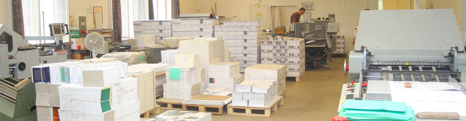
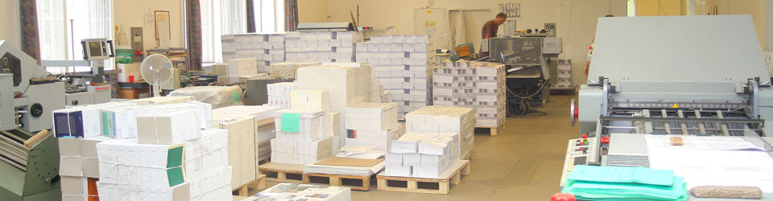

 
 Főoldal
Főoldal Magunkról
Magunkról Szolgáltatásaink
Szolgáltatásaink Minőség
Minőség Kapcsolat
Kapcsolat Árajánlatkérés
Árajánlatkérés
Általános Tudnivalók (Nyomdai Kisokos) |
|
|
Tisztelt Ügyfelünk! ÁLTALÁNOS ANYAGLEADÁSI FELTÉTELEK: - File-formátum: oldalanként megírt Composite PDF illetve PS - Felbontás: 2400 dpi (vagy 2540 dpi) - PDF-készítés: Distiller-rel PS-ből - Színek: Composite CMYK - Képek beágyazása: All - Fontok beágyazása: Complete + download PPD fonts - PostScript verzió: Level 2 vagy Level 3 - Transzparenciák: High Resolution ANYAGLEADÁS: Az állományokat DVD-n, CD-n, pen drive-on és FTP-n tudjuk fogadni. FTP-vel való feltöltés esetén a címet és jelszót a termékmenedzserektől kell kérnie. Kérjük csak a végleges állományokat töltse fel. A file elnevezéseknél törekedjen a minél tömörebb és informatívabb nevekre! Az oldalszám jelölésének a file megnevezésében mindig egyeznie kell az oldal vagy az oldalak számával a PDF file-ban. Pl.: konyv_008_069.pdf tartalmazza 8-tól 69-ig az oldalakat a dokumentumban. Az oldalszámozás prefixeket ne tartalmazzon. A feltöltött állományok, illetve a megrendelés mellé kérjük fekete-fehér printet és/vagy forgatót mellékelni, amely a végső PDF-file-ról készült! Amennyiben nem küld forgatót, akkor a kapott PDF file-ok tartalmáért a nyomda nem vállal felelősséget. E-mailben (ctp@gyomaikner.hu) file mellékletként kérünk információt a küldött állományokról. Többoldalas kiadvány esetén a file név tartalmazza a bennük lévő oldalak oldalszámát. A file nevekben ékezeteket és PC idegen (+,-*/ stb...) karaktereket ne használjon! Kérjük, amennyiben speciális rácssűrűséggel, vagy rácstípussal kívánja munkáját elkészíttetni, azt megrendelésében jelezze! Tájékoztatjuk ügyfeleinket, hogy PDF-et nem áll módunkban javítani. Amennyiben az Önök által leadott file nem felel meg kérésünknek, abban az esetben új file-t kell bekérnünk Önöktől, ami az elkészítési határidőt nagymértékben befolyásolhatja. A kapott PDF file tartalmáért és minőségéért felelősséget nem vállalunk! OLDALAK KEZELÉSE A PDF (vagy PS) file-ok tetszőleges oldalmennyiséget tartalmazhatnak. Az oldalakat egyesével (nem oldalpárban) kérjük! Többoldalas kiadványok esetén az oldalakat egy file-ban, egymást helyesen követő, folyamatos oldalakban készítsék elő, a vákát (üres) oldalakat is tegyék bele folyamatosan, hogy kilövésnél ne legyen ebből probléma! Tördeléskor az oldalméret egyezzen meg a vágott mérettel, a kifutó (bleed) 3-5 mm lehet. A vágó- és illesztőjeleket kérjük, állítsák be a file megírásánál, csak a szoftver által felrakott vágójeleket használják. FONTOK KEZELÉSE A fontok komplett beágyazása a PS és PDF-állományba igen fontos, kérjük ezt maradéktalanul végezze el! Szöveget is tartalmazó vektoros EPS-ekben a karaktereket kérjük görbévé alakítani. Kérjük, ügyeljen a fekete szöveges elemek valóban fekete (egy színcsatornát tartalmazó) előkészítésére, illetve a negatív szövegrészek megfelelő betűméreteire. Színes szövegeket knockout-ra (kiütés) a fekete szöveget pedig overprintre állítsa be. KÉPELEMEK KEZELÉSE Az alkalmazott képformátumok tekintetében javasoljuk a nagy felbontású (min. 250-300 dpi-s) CMYK TIFF, CMYK PSD, maximális minőségű JPEG és vektoros EPS-ek használatát. Vonalas képek (bitmap) min. 600 dpi-sek legyenek. A képállományok ne legyenek 5 file-os (DCS) EPS, GIF, WMF, PICT file-formátumok! SZÍNEK KEZELÉSE Színgaranciát csak a hozzánk beérkező anyagból nálunk készült „Europe ISO Coated FOGRA 27” színprofillal bekalibrált digitális proof alapján tudunk vállalni. Direktszínek (spot colors) alkalmazása esetén kérjük ügyeljen arra, hogy a feltöltött PDF-ben kizárólag azok a színek legyenek direktszínként feltüntetve, meghatározva, amelyeket valóban direktszínként is kívánja nyomtatni! Kérjük ne rendeljen a CMYK színekhez színprofilt (az Acrobat Distillerben használt aktuális Adobe PDF beállítás COLOR beállításánál ne legyen további színhozzárendelés). PDF ÁLLOMÁNYOK ELLENŐRZÉSE Kérjük, hogy a PDF-eket nyomdába küldés előtt feltétlenül ellenőrizze, hogy azok megfelelnek-e az általános leadási követelményeknek! A nyomdába rosszul küldött PDF-ek mindkét fél számára felesleges időt, energiát és költséget jelentenek, ezért kérjük győződjön meg állománya megfelelőségéről: - fontok típusa és beágyazása, - gyártási feltételek: kifutók, vágójelek, regisztrációs jelek ellenőrzése, - oldalak, sorrend, orientáció ellenőrzése, - méretek, kifutók és egyéb méretek ellenőrzése, - színek száma, alkalmazott színek ellenőrzése. A nyomda nem vállal felelősséget az anyagleadási feltételeknek nem megfelelő anyagokért, ezek által keletkező hibákért!
|